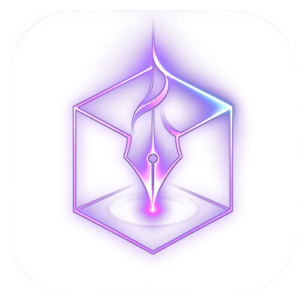
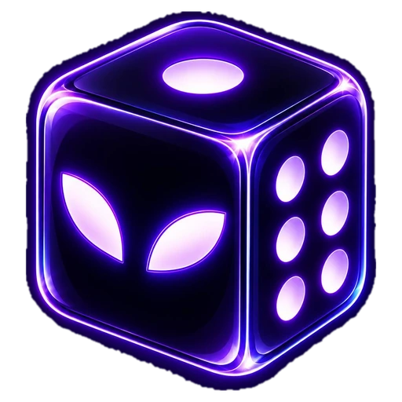
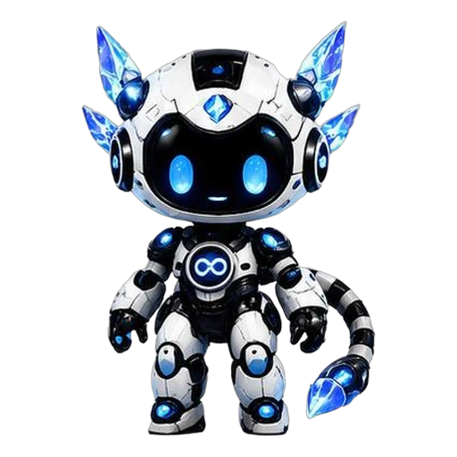

FLAGSHIP
Void Scriptor Studio
Studio kreatif untuk merancang karakter, kostum, senjata, dan cerita dalam satu basis data proyek yang konsisten.
Jelajahi produk →

Satu platform. Kemungkinan tanpa batas.
Kami membangun perangkat lunak kreatif yang menyatukan ide, data, dan alur kerja—agar setiap dunia yang Anda ciptakan tetap konsisten.
Kami tidak menjual klaim. Setiap angka di halaman ini berasal dari fakta produk yang bisa Anda periksa.
Studio kreatif untuk merancang karakter, kostum, senjata, dan cerita dalam satu basis data proyek yang konsisten.
Jelajahi produk →Susun kuis, bank soal, penilaian, dan pengalaman belajar interaktif dengan alur kerja cepat.
Buka QOWNER →
Pendamping cerdas untuk membantu riset, menjaga struktur proyek, dan mempercepat pekerjaan kreatif.
Pelajari →
Windows tersedia kini — Linux, macOS & Android menyusul. Setiap dunia yang Anda ciptakan tetap konsisten.
Lihat visi perusahaan →

Studio kreatif untuk merancang karakter, kostum, senjata, dan cerita dalam satu basis data proyek yang konsisten.
Windows · macOS · Linux
Susun kuis, bank soal, penilaian, dan pengalaman belajar interaktif dengan alur kerja cepat.
Windows · Web · Android
Pendamping cerdas untuk membantu riset, menjaga struktur proyek, dan mempercepat pekerjaan kreatif.
Terintegrasi dengan StudioVoid Scriptor Corporation adalah studio teknologi independen yang berfokus pada perangkat lunak kreatif, sistem identitas karakter, dan alat pengelolaan dunia cerita. Kami merancang platform yang membantu ide besar tumbuh tanpa kehilangan detail pentingnya.
Masuk untuk mengakses profil dan semua produk Anda.
Masuk dengan GitHub atau Google untuk mengakses profil dan produk Anda.